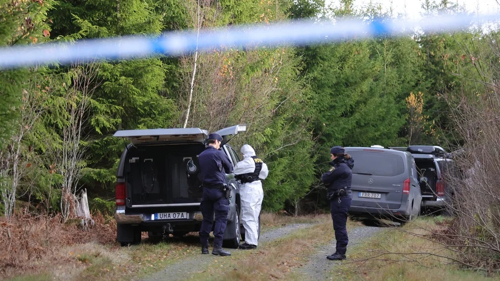
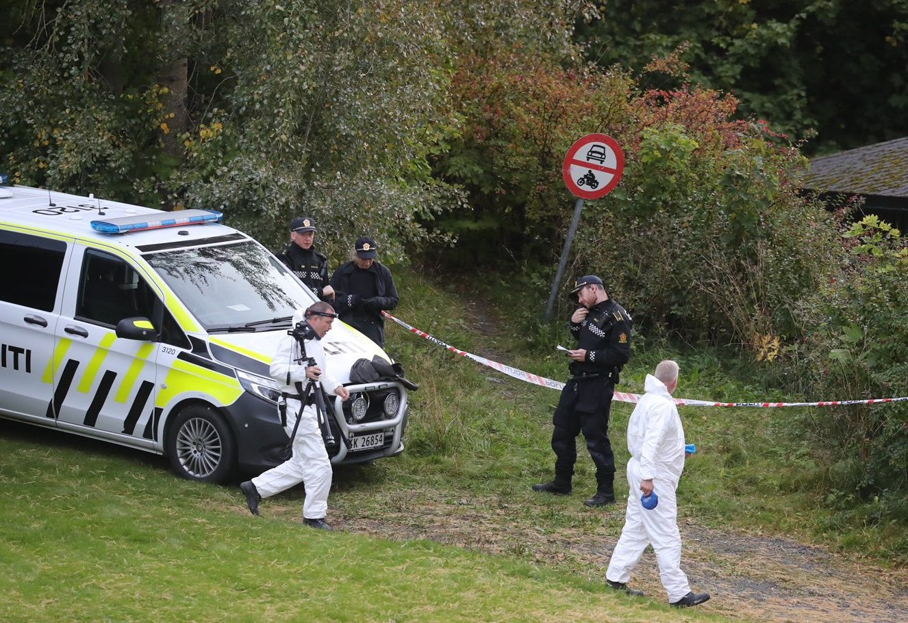

October 05, 2026
Gunman opens fire on hunting party in Norway — father and son killed, third hunter wounded



Headline card: The Night Desk; scene photos: Norwegian press pool
What happened
Just after 7:30 on Sunday morning, a gunman opened fire on a hunting party gathered at a rural farm in the forest near Halden, in Østfold county — about 60 miles south of Oslo, near the Swedish border.
About a dozen hunters had assembled to assign positions for the opening of moose and deer season. They never made it into the woods.
Two men — a father in his 70s and his son in his 40s — were killed where they stood. A third man, also in his 40s, was shot and airlifted by helicopter to Ullevål Hospital in Oslo, where he was reported stable but in critical condition. By Monday, his condition had improved to stable, according to police prosecutor Anders Svarholt.
The suspect
The shooter was not part of the hunting party. Fellow hunters and bystanders tackled him and held him on the ground until police arrived — officers announced the arrest at 8 a.m., roughly 30 minutes after the first emergency calls.
The suspect is a man in his late 20s who lives in Halden. Police say he owned two registered hunting rifles and had no prior criminal record. According to reports citing police prosecutor Anders Svarholt, the suspect has confessed. He is charged with murder and attempted murder. A detention hearing was scheduled for Monday. Norwegian media report the man previously belonged to the hunting party — investigators suspect a conflict, not a random attack, was behind it.
What police are saying
Investigators believe the shooter acted alone and say there is no ongoing threat to the public — but they do not believe the attack was random.
"We do not think this is a completely random person who started shooting at a hunting party," police said, adding that evidence suggested the shooter may have had some link to the group.
Forensic teams worked the scene through Sunday, and the municipality activated a crisis team for families and witnesses. Detectives are weighing whether the attack targeted specific people or the whole group, and a motive has not been released. Officials also said a forensic psychiatric evaluation is expected.
Because the entire hunting party was present when the shooting began, police have reportedly classified the other members as victims in the investigation as the full sequence of events is reconstructed.
Why this one matters
Shootings of this kind are extremely rare in Norway. Early October is the height of moose-hunting season along the Swedish border, and the tight-knit hunting community around Halden is reeling — the victims died before their day's hunt even started, and the people who stopped the shooter were the hunters themselves.
The suspect faces a detention hearing today. This story is developing.
Source: Associated Press — read the original report
← Back to latest stories